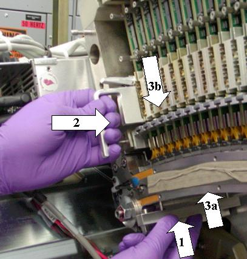

Notes:
The module must be seated on the detector rail. DO NOT force it into position. The module will seat on the rail when the module alignment pins are properly aligned.
You may have to push the top of the board toward the backplane to engage the top alignment pins if the digital cable is pushing the board away from the backplane.
If the Controlled Seating Tool is not used, detector collimator damage may result.
Illustration 12: Module insertion
